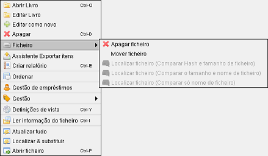

Operações de ficheiro
Caminho de menu: Ver > Clique do botão direito no item
Caminho de menu: Formulário de item > Clique do botão direito no campo deficheiro
Por predefinição, o Data Crow não interfere com os ficheiros no seu sistema. Por exemplo: quando apaga um item
de livro que tenha ligado um ficheiro PDF, o Data Crow não apaga o próprio ficheiro, só o item de livro. Pode, contudo,
usar o menu Ficheiro na vista ou as opções oferecidas nos campos de ficheiro.

Menu emergente na vista Cartão ou Tabela
Menu emergente no campo de ficheiro no formulário de item
Limpar valor do campo
Limpa o nome do ficheiro do valor do campo, mas deixa o ficheiro em paz.
Apagar ficheiro
Apaga o ficheiro no disco e limpa a informação do ficheiro no item.
Mover ficheiro
Move o ficheiro para uma localização diferente (à sua escolha).
Localizar ficheiro
Tenta localizar um ficheiro por si. Muito conveniente quando um ficheiro foi movido e não sabe para onde. Efetivamente, é usado
o Gestor de unidades. Tem várias opções disponíveis. Todas elas são
explicadas na secção do Gestor de unidades.